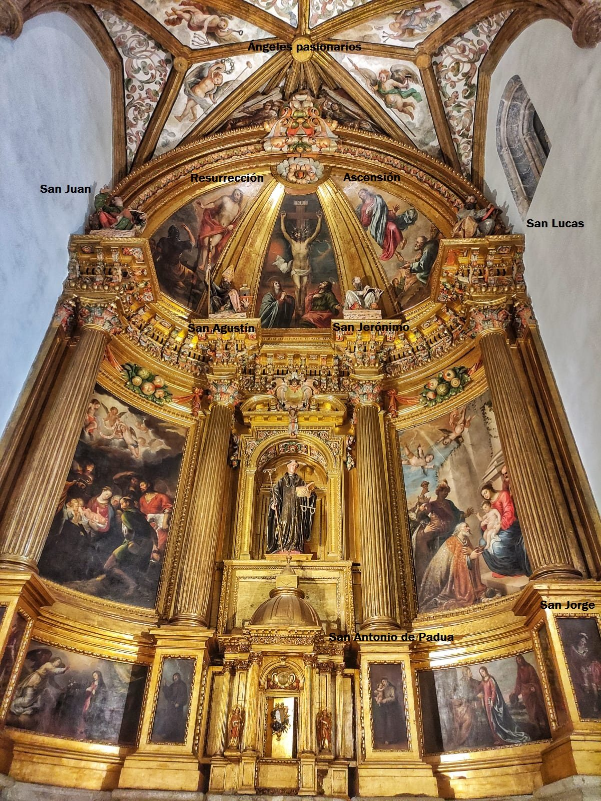
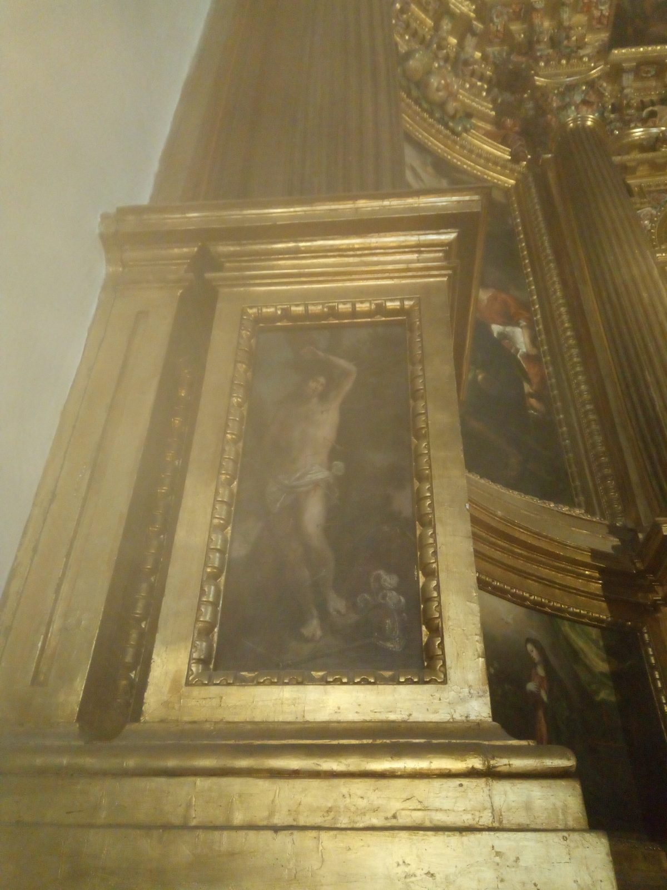
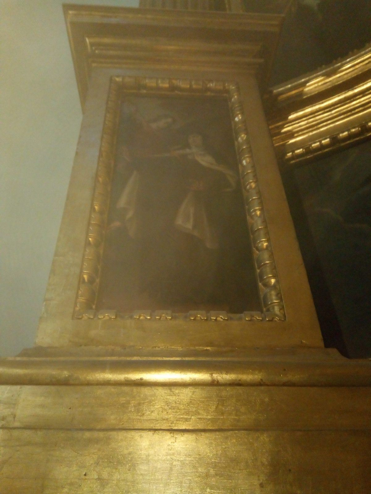
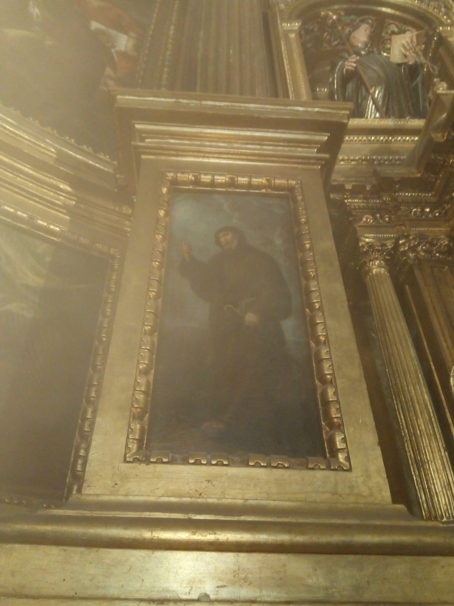
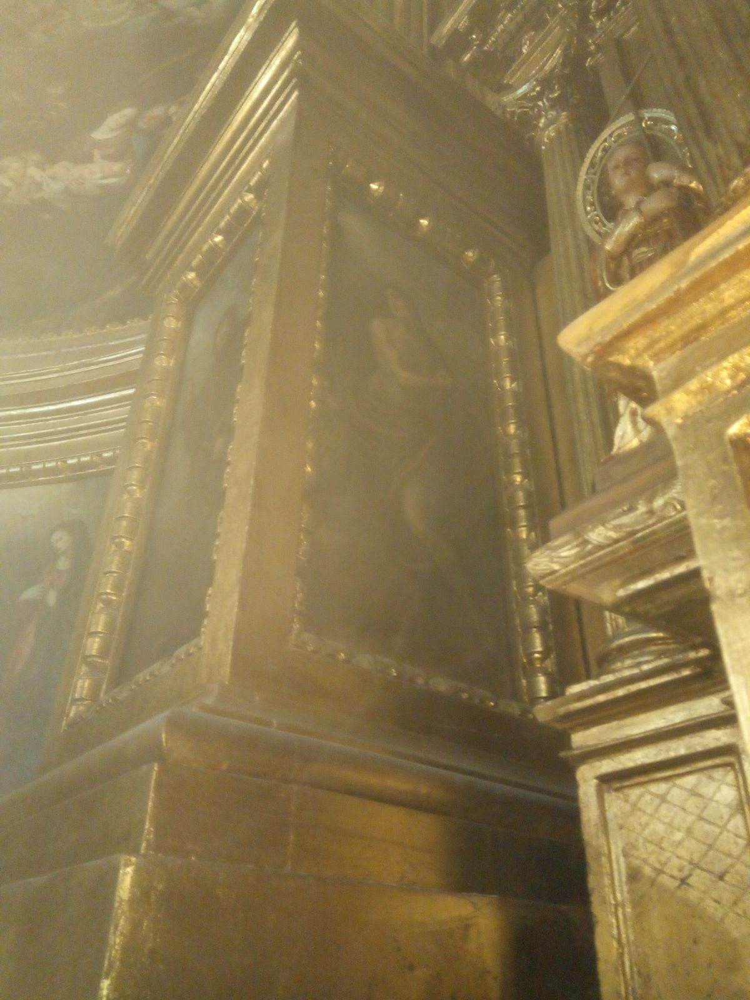
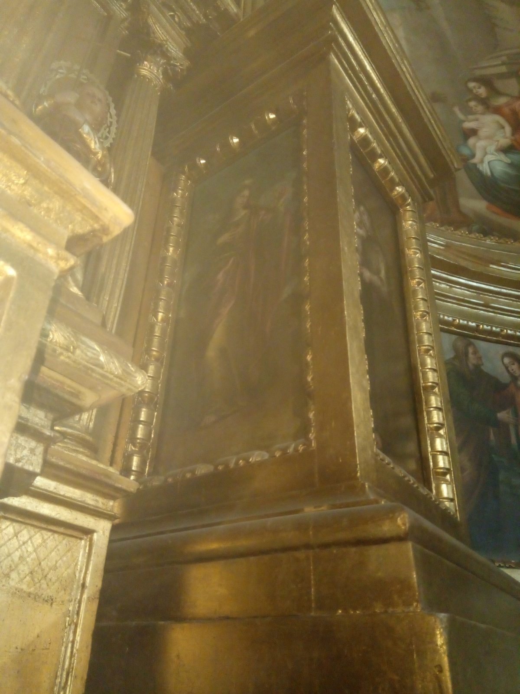
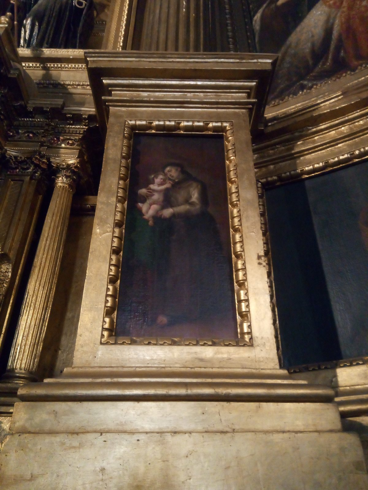
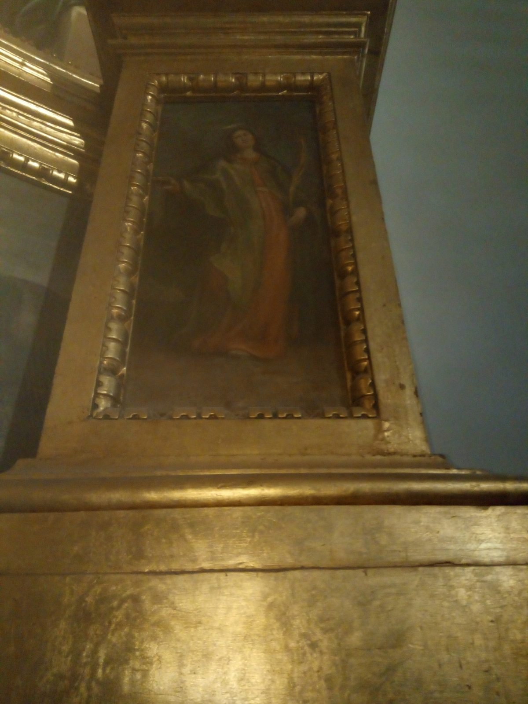
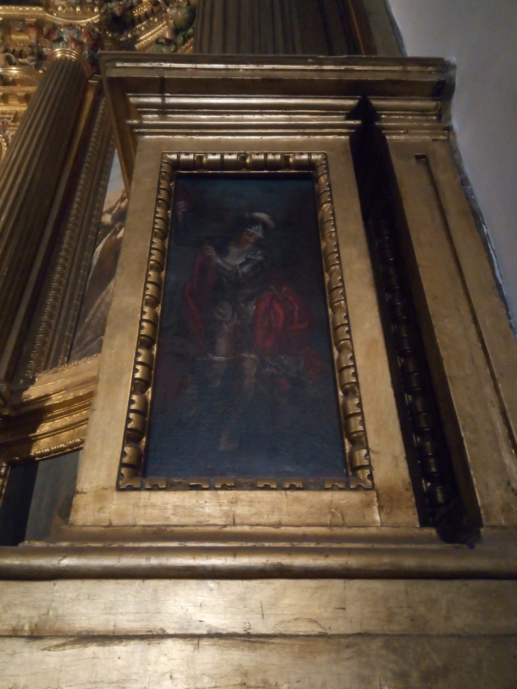

El retablo mayor es la obra más valiosa del templo y un magnífico ejemplo de la escuela retablista del Barroco madrileño. Toda la obra gira en torno a un mensaje: la redención del hombre por Cristo, desde su nacimiento hasta su Resurrección y Ascensión.
Historia
Sustituyó a un primer retablo del siglo XVI, encargado a Nicolás de Vergara el Viejo, que nunca llegó a terminarse. En 1637 se contrató el actual, por 8.000 ducados, con dos prestigiosos artífices de la Villa y Corte: el arquitecto y ensamblador Francisco González de Vargas y Pedro de la Torre, maestro escultor de retablos y arquitecto de Felipe IV, buen conocedor de las novedades que se hacían en la corte. Se hizo en madera de pino de Cuenca y se doró entre 1653 y 1655.
En 1657 se encargaron las pinturas a dos de los mejores pintores del Barroco madrileño, Francisco Camilo y Antonio de Pereda, que también habían trabajado para la corte. Sus lienzos, de rico colorido, pincelada jugosa y composiciones efectistas, siguen el gusto «neoveneciano» de la época.
Estructura
El retablo se adapta a la cabecera poligonal del templo y forma un espacio cóncavo. Tiene tres partes:
- El banco, sobre un basamento de granito con molduras labradas y dos accesos laterales para subir a la parte posterior. Bajo el sagrario hay una pieza de caliza blanca con dos cabezas de querubines, probablemente restos de la iglesia del siglo XVI. En el centro, el sagrario, en forma de pequeño templo, ocupa un lugar destacado, como era propio del Barroco.
- El cuerpo principal, dividido en tres calles por grandes columnas corintias de fuste estriado.
- El cascarón, la gran bóveda de cuarto de esfera que lo remata.
Casi todo el conjunto está dorado. Las partes principales se enmarcan con molduras, ovas y gallones, y abundan los elementos naturales ricamente policromados: guirnaldas de flores y hojas, modillones con frutos, tarjas vegetales con cabezas de querubines sobre la hornacina del santo y festones de frutas, telas y hojas sobre los dos grandes lienzos.
Imaginemos el efecto de este retablo a la luz de las velas, con sus dorados, su policromía y su juego de luces y sombras: el arte de la Contrarreforma buscaba enseñar, sorprender y conmover, y ayudar al creyente a elevar su espíritu en la oración.
Esculturas
En el centro, en su hornacina, está la talla de Santo Domingo de Silos, titular de la iglesia, de gran realismo y atribuida a Pedro de la Torre. Viste el hábito negro de largas mangas de los abades benedictinos y lleva el libro, el báculo y unos grilletes, porque se le invocaba como liberador de los cautivos.
En la parte alta hay cuatro esculturas soberbias: en los extremos, los evangelistas San Juan y San Lucas; en el centro, dos Padres de la Iglesia revestidos de obispos, San Agustín (con báculo y la maqueta de una iglesia) y San Jerónimo (con la Biblia). Sus posturas, gestos y pliegues les dan un vigor y un movimiento muy barrocos, y su presencia afirma la autoridad de la Iglesia como custodia e intérprete de la Palabra de Dios.
Pinturas del cuerpo principal
A la izquierda, la Adoración de los pastores, de Francisco Camilo. Es una escena nocturna de gran teatralidad, muy propia del tenebrismo: varios focos de luz guían la mirada hacia el Niño con su Madre, el cielo abierto con los ángeles y la vela que sostiene San José. Se aprecia la influencia de Rubens y de la pintura veneciana.
A la derecha, la Adoración de los Reyes Magos, de Antonio de Pereda, escena diurna de bello colorido. Guiados por la estrella, los Magos adoran al Niño, que irradia luz. Melchor, arrodillado, le ofrece oro, símbolo de la realeza; Gaspar y Baltasar esperan con el incienso, signo de adoración a Dios, y la mirra, con la que se ungía a los muertos. Representan las tres edades del ser humano y los tres continentes entonces conocidos: Europa, Asia y África. María y José, cobijados bajo una arquitectura clásica en ruinas, contrastan por su sencillez con el lujo de los Magos; San José, casi confundido con las ruinas, sostiene la vara florida.
El cascarón y la bóveda
En el cascarón se representa el final de la vida de Cristo: en el centro, la Crucifixión, con María y San Juan al pie de la cruz; a la izquierda, la Resurrección, con un soldado romano de espaldas, testigo atónito; y a la derecha, la Ascensión del Señor ante los apóstoles.
En la bóveda del presbiterio, sobre el retablo, cuatro ángeles pasionarios llevan los instrumentos de la Pasión: la corona de espinas y la esponja, la lanza y el martillo, las tenazas y los flagelos, y los clavos y el farol. Les acompañan dos Virtudes, la Justicia, con espada, y la Fortaleza, junto a una columna. Estas pinturas son singulares: no se hicieron sobre el muro, sino sobre planchas de madera encajadas entre los nervios de la bóveda.
Las pinturas del banco
En el banco hay pequeñas pinturas de santos y, en los extremos, dos escenas de la vida de la Virgen: la Anunciación y la Visitación de María a su prima Isabel.







